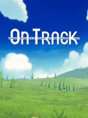

On Track
On Track
Detalles
|  | |
| Tiempo de juego | No Jugado |
| Última actividad | Nunca |
| Añadido | 01/09/2024 11:14:07 |
| Modificado | 01/09/2024 11:14:50 |
| Estado de finalización | Not Played |
| Librería | Steam |
| Fuente | Steam |
| Plataforma | PC (Windows) |
| Fecha de lanzamiento | 31/07/2024 |
| Puntuación de la Comunidad | 82 |
| Puntuación de la Crítica | |
| Puntuación de usuario | |
| Género | Casual Free to Play |
| Desarrollador | GIGATANK 3000 |
| Editor | GIGATANK 3000 |
| Característica | Achievements Single Player |
| Enlaces | Punto de encuentro Discusiones Guías Noticias Página de la tienda PCGamingWiki Logros |
| Tag | 3D Abstract Atmospheric Casual Colorful Cozy Cute Idler Minimalist Music nature Procedural Generation realistic Relaxing Singleplayer Software Stylized Time Management Trains Utilities |
Descripción
Welcome to On Track!
Enjoy a relaxing environment to help you tackle any tasks big or small you’ve been procrastinating on.
On Track was built track by track to help you get focused. When you board, name any goal you want to accomplish, set a timer, and get to work! Listen to laidback music and adjust ambient audio if ASMR is more your speed.
Set a timer and make your to-do list of tasks. Feel accomplished as you cross off each item you’ve completed and re-assured you can edit and delete any tasks as you go. You can start, stop, restart or edit your timer sessions to help you stay on top of your tasks.
As the landscape rolls by, it will evolve over time as you complete more task sessions. Keep an eye out and you may even see some surprises. You can slow down or stop the train at any time.
On Track features a playlist of relaxing lo-fi inspired tunes to help you get into your flow state and become one with the train. Adjust the background sound effects for your custom soundscape including the sound of the train and passengers in neighboring train cars.
Adjust the time of day to your personal taste, from the darkest of nights to the brightest of days.
Enjoy a relaxing environment to help you tackle any tasks big or small you’ve been procrastinating on.
On Track was built track by track to help you get focused. When you board, name any goal you want to accomplish, set a timer, and get to work! Listen to laidback music and adjust ambient audio if ASMR is more your speed.
Manage your Tasks
Set a timer and make your to-do list of tasks. Feel accomplished as you cross off each item you’ve completed and re-assured you can edit and delete any tasks as you go. You can start, stop, restart or edit your timer sessions to help you stay on top of your tasks.
Watch the World Go By
As the landscape rolls by, it will evolve over time as you complete more task sessions. Keep an eye out and you may even see some surprises. You can slow down or stop the train at any time.
Relaxing Lo-fi Soundtrack
On Track features a playlist of relaxing lo-fi inspired tunes to help you get into your flow state and become one with the train. Adjust the background sound effects for your custom soundscape including the sound of the train and passengers in neighboring train cars.
Early Birds and Night Owls
Adjust the time of day to your personal taste, from the darkest of nights to the brightest of days.